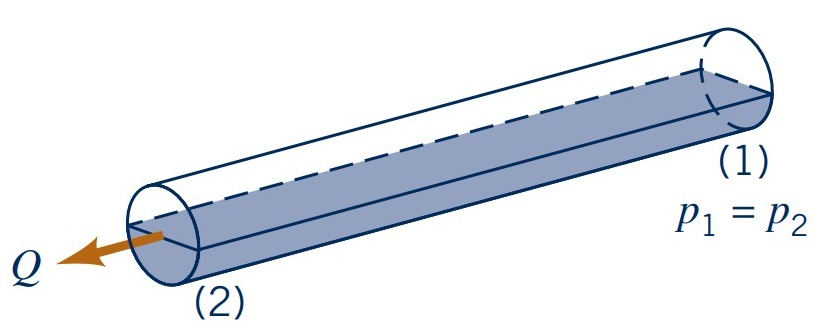
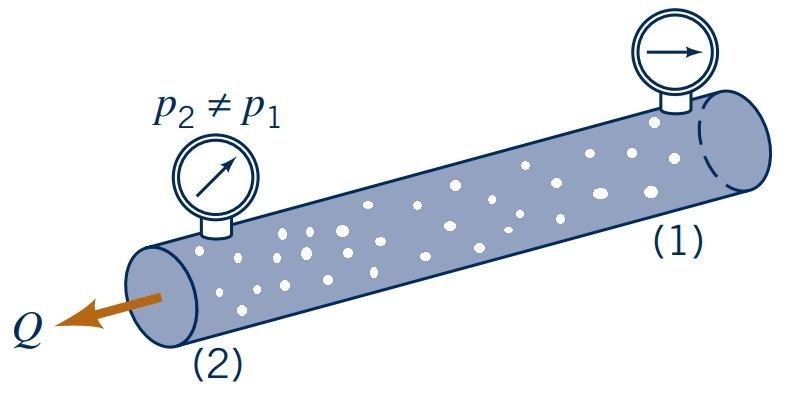

Fluid Mechanics
Viscous pipe flows
Lecturer: Jakob Hærvig
Slides by Jakob Hærvig (AAU Energy) and Jacob Andersen (AAU Build)
Types of pipe flows
Various pipe flow types exist, each with distinct physics
- Single phase pipe flows
- Completely filled with liquid (or gas)
- Pressure difference ($p_2 - p_1$) drives flow
- Open channel pipe flow 
- Partially filled with liquid
- Gravity drives flow
- Multiphase pipe flow 
- Either partially or full of liquid (or gas)
- Gravity drives flow
- Complex physics (bubbles, particles, droplets etc)
Much research focuses on complex multiphase flows (including own PhD)
Numerical simulations provide details on the process, which can be difficult to capture experimentally.
- Turbulent pipe flow
- Solid particles with $d_p = 10$ μm
- Particle agglomeration (sticking) occurs due to van der Waals and electrostatic forces
Video: Agglomeration of particles in a turbulent pipe flow
Why look at viscous pipe flows ?
Laminar and turbulent flows
Characterised by different flow regimes:
- Turbulent flow: chaotic and irregular (mixing occurs)
- Transitional flow: between laminar and turbulent
- Laminar flow: smooth and orderly (no mixing)
Flow regime depends on Reynolds number ($\text{Re}_D=U\rho D/\mu$)
- $\text{Re}_D > 4000$: Turbulent
- $2300 < \text{Re}_D < 4000$: Transitional
- $\text{Re}_D < 2300$ : Laminar
Entrance regions and fully-developed flows
Region close to inlets
- (1): Inviscid (enters with near uniform velocity aka plug flow)
- (2): Reaches fully-developed (boundary layer reached centre)
- (3): Remains fully developed and nothing changes
- (4): Skewed and starts to develop again
- (5): Reaches fully-developed again
- (6): Remains fully-developed and nothing changes
Entrance length $l_e$ depends on Reynolds number:
- Laminar: \( l_e/D \approx 0.06 \text{Re}_D \)
- Turbulent: \( l_e/D \approx 4.4 \text{Re}_D^{1/6} \)
Pressure profile in pipe flows
Pressure varies in fully-developed laminar flow linearly along the pipe
- $\partial p/\partial x= -\Delta p/p < 0$
Pressure drop in pipe flows is balanced by:
- Pressure drop due to friction (viscous effects)
- Pressure drop due to acceleration/deceleration of flow (inertia effects)
- Hydrostatic pressure variation due to elevation changes
Recall from analytical solutions earlier:
- Valid for laminar, steady, horisontal, fully-developed flow
\(Q = \dfrac{\pi R^4}{8\mu} \left(-\dfrac{\partial p}{\partial z}\right)\) \(= \dfrac{\pi D^4}{128\mu} \left(-\dfrac{\partial p}{\partial z}\right)\) \(= \dfrac{\pi D^4 \Delta p}{128\mu l}\)
For non-horisontal pipes:
\( Q =\dfrac{\pi D^4(\Delta p - \rho g l \text{sin}\theta)}{128\mu l}\)
Exercise: Laminar Pipe Flow
An oil with a viscosity of $\mu = 0.1 \, \text{Pa} \cdot \text{s}$ and density $\rho = 900 \, \text{kg/m}^3$ flows in a pipe of diameter $D = 0.020 \, \text{m}$.
- (a) What pressure drop, $p_1-p_2$, is needed to produce a flowrate of $Q=2.0 \times 10^{-5} \, \text{m}^3/\text{s}$ if the pipe is horizontal with $x_1 = 0$ and $x_2 = 10 \, \text{m}$?
- (b) How steep a hill, $\theta$, must the pipe be on to if the oil is to flow through the pipe at the same rate as in part (a), but with $p_1=p_2$?
- (c) For the conditions of part (b), if $p_1=200$ kPa, what is the pressure at section $x_3=5$ m, where $x$ is measured along the pipe?
Transition from laminar to turbulent flow
Happens gradually between $Re \approx 2100$ and $Re \approx 4000$
- Small bursts of turbulence start at $\text{Re} \approx 2100$
- Bursts grow in size and frequency with increasing $\text{Re}$
- Increased mixing and momentum transfer occurs
- Higher heat transfer rates and pressure drop
Velocity field $\textbf{\textit{V}}$ changes from being 1-D to 3-D
- Laminar: $\textbf{\textit{V}}=v_x\cdot \hat{\textbf{i}}$
- Turbulent: $\textbf{\textit{V}}=v_x\cdot \hat{\textbf{i}} + v_y\cdot \hat{\textbf{j}} + v_z\cdot \hat{\textbf{k}}$
Decomposing a turbulent flow
Consider a turbulent flow with instantaneous velocity $u(t)$
- Time-averaged velocity component $\overline{u}$
- $T$ is the averaging time period (should be long enough to capture the relevant flow structures)
- Fluctuating velocity component $u'$
- Instantaneous velocity can then be decomposed as:
$$\overline{u}(x,y,z) = \dfrac{1}{T} \int_{t_0}^{T+t_0} u(x,y,z,t) \, \text{d}t$$
$$u'(x,y,z,t) = u(x,y,z,t) - \overline{u}(x,y,z)$$
$$u(x,y,z,t) = \overline{u}(x,y,z) + u'(x,y,z,t)$$

Describing turbulence
Relevant to quantify strength of fluctuations
- Clearly, time-averaging fluctuations $\overline{u'}$ does not make sense
$$\overline{u'}(x,y,z) = \dfrac{1}{T} \int_{t_0}^{T+t_0} u'(x,y,z,t) \, \text{d}t = 0$$
- What if we take squareroot of fluctuations and then time-average?
$$\overline{(u')^2}(x,y,z) = \dfrac{1}{T} \int_{t_0}^{T+t_0} u'(x,y,z,t)^2 \, \text{d}t > 0$$
- To get "back" to same order of magnitude, we now take squareroot
$$u_\text{rms}(x,y,z) = \sqrt{\overline{(u')^2}(x,y,z)}$$
- This is called the root-mean-square (RMS) of the fluctuations
- Often normalised by the time-averaged velocity to get a relative measure, aka turbulence intensity
$$I(x,y,z) = \dfrac{u_\text{rms}(x,y,z)}{\overline{u}(x,y,z)}$$